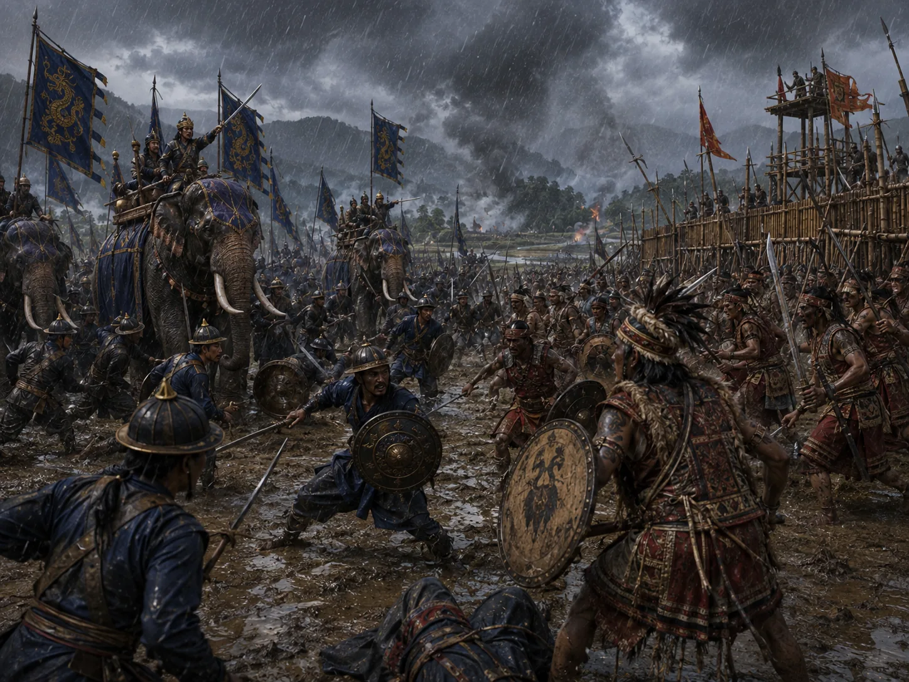

The Battle of Turung Against the Kacharis
1490 · The coming of Sukaphaa

Ahom forces clash fiercely with Kachari armies near the Dikhou; Ahom army suffers a tactical reverse leading to temporary tribute concessions.
Sources have not yet been catalogued for this record.
People: Khenphung Borgohain, Suhenphaa
Open this scene in the interactive archive · Follow this event on MAP